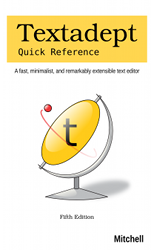

Textadept Quick Reference Book

Textadept Quick Reference
Fifth Edition
Order the e-book – $15 USD
Order the e-book bundle with
Lua Quick Reference – $27 USD
Order the print book via Amazon US, CA, UK, DE, FR, IT, ES, JP –
~$25 USD
Published: Dec 2020
ISBN: 978-0-9912379-6-8
Pages: 179
Textadept is a fast, minimalist, and remarkably extensible cross-platform text editor for programmers. This quick reference contains a wealth of knowledge on how to script and configure Textadept using the Lua programming language. It groups the editor’s rich API into a series of tasks in a convenient and easy-to-use manner.
This book covers how to:
- Leverage Textadept’s important files and folders
- Adeptly navigate and manipulate text
- Mark lines and text visually
- Show interactive lists and call tips
- Prompt for user input in various ways
- Spawn asynchronous, interactive child processes
- Configure colors, themes, and other settings
- Define lexers for highlighting source code
- And much more
It serves as the perfect complement to Textadept’s comprehensive Manual and exhaustive API documentation.